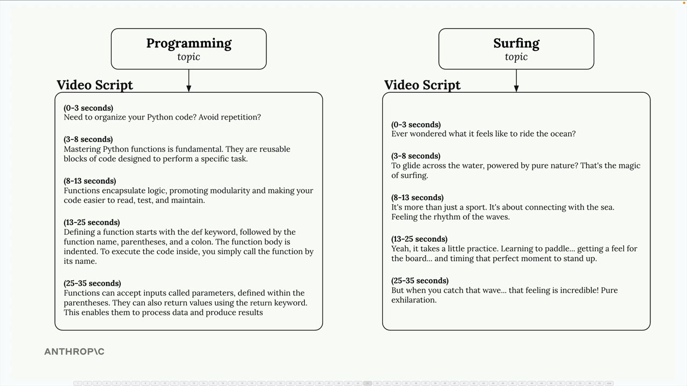
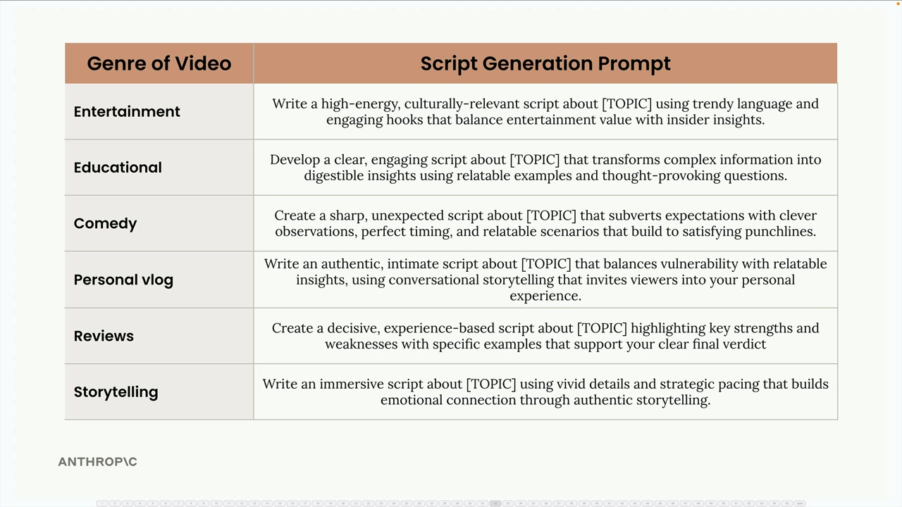
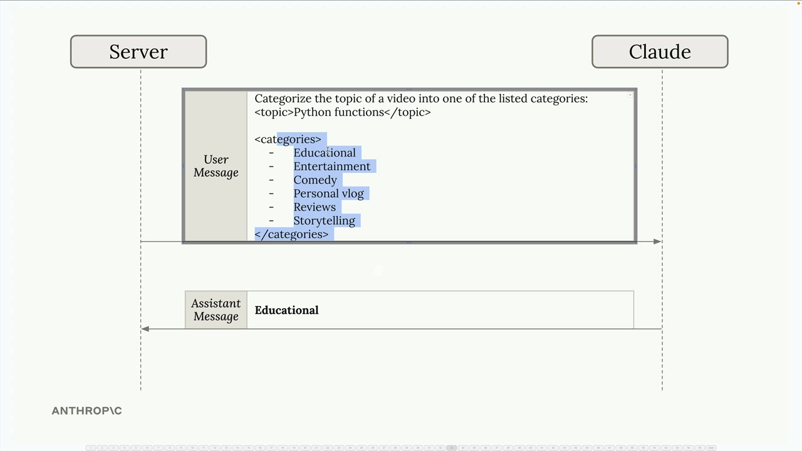
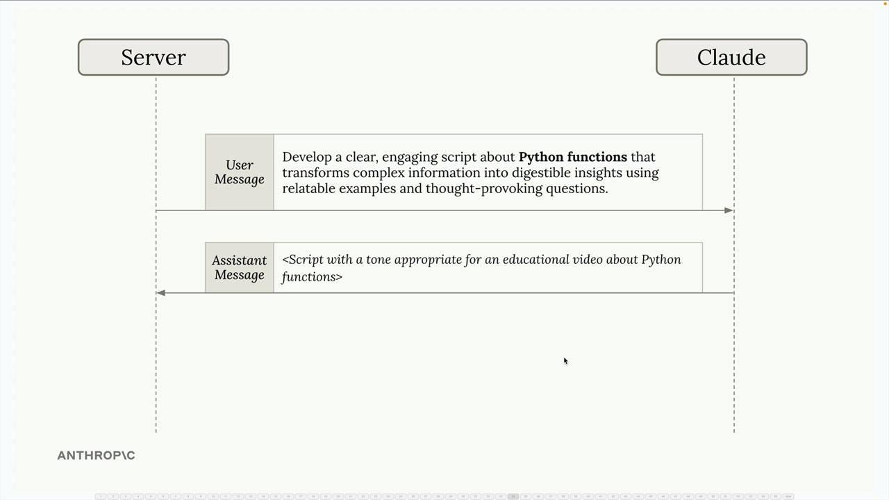
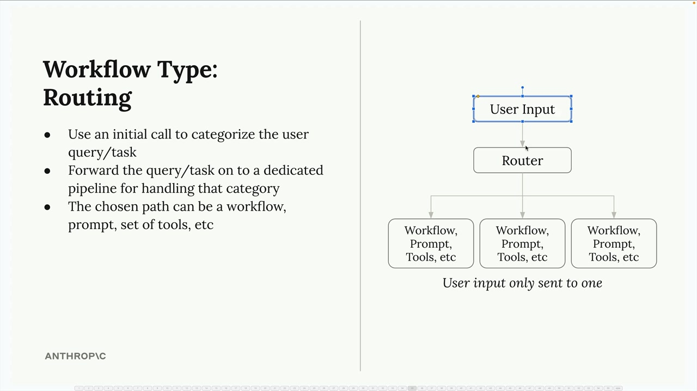

라우팅 워크플로우
라우팅 워크플로우는 AI 애플리케이션에서 흔히 발생하는 문제를 해결합니다. 사용자 요청의 유형이 다양할 때 각각 다른 처리 방식이 필요합니다. 하나의 범용 프롬프트를 사용하는 대신, 들어오는 요청을 분류하여 전문화된 처리 파이프라인으로 라우팅할 수 있습니다.
범용 프롬프트의 문제점
사용자 주제에서 영상 스크립트를 생성하는 소셜 미디어 마케팅 도구를 생각해 보세요. 사용자가 "프로그래밍" 또는 "서핑"을 주제로 입력할 수 있지만, 이들은 매우 다른 유형의 콘텐츠를 생성해야 합니다:

프로그래밍 주제는 명확한 설명과 정의가 있는 교육적 콘텐츠를 필요로 합니다. 서핑 주제는 흥미와 시각적 매력을 강조하는 엔터테인먼트 중심의 스크립트가 더 적합합니다. 단일 범용 프롬프트로는 두 가지를 효과적으로 처리할 수 없습니다.
콘텐츠 카테고리 설정
첫 번째 단계는 애플리케이션이 생성해야 할 다양한 콘텐츠 유형을 정의하는 것입니다. 요청을 다음과 같은 장르로 분류할 수 있습니다:
- 엔터테인먼트 - 트렌디한 언어로 문화적으로 관련성 높은 에너지 넘치는 콘텐츠
- 교육 - 공감 가는 예시로 명확하고 흥미로운 설명
- 코미디 - 재치 있는 관찰과 타이밍이 있는 날카롭고 예상치 못한 콘텐츠
- 개인 브이로그 - 대화체 스토리텔링으로 진솔하고 친밀한 콘텐츠
- 리뷰 - 장단점을 부각하는 경험 기반의 결정적인 콘텐츠
- 스토리텔링 - 생생한 디테일과 감정적 연결을 사용하는 몰입형 콘텐츠

각 카테고리에는 자체적인 전문 프롬프트 템플릿이 있습니다. 예를 들어, 교육 프롬프트는 Claude에게 "공감 가는 예시와 생각을 자극하는 질문을 사용하여 복잡한 정보를 소화하기 쉬운 인사이트로 변환하는 명확하고 흥미로운 스크립트를 개발하라"고 요청할 수 있습니다.
라우팅의 실제 작동 방식
라우팅 프로세스는 두 단계로 진행됩니다:
- 분류 - 사용자의 주제를 미리 정의된 장르 중 하나로 분류해 달라는 요청과 함께 Claude에 전송
- 전문 처리 - 분류 결과를 사용하여 적절한 프롬프트 템플릿을 선택하고 콘텐츠 생성

예를 들어, 사용자가 "Python 함수"를 주제로 입력하면 먼저 Claude에게 분류를 요청합니다:
Categorize the topic of a video into one of the listed categories:
<topic>Python functions</topic>
<categories>
- Educational
- Entertainment
- Comedy
- Personal vlog
- Reviews
- Storytelling
</categories>Claude가 "Educational"로 응답하면, 교육 프롬프트 템플릿을 사용하여 실제 스크립트 콘텐츠를 생성합니다.

라우팅 워크플로우 아키텍처
라우팅 워크플로우는 다음 패턴을 따릅니다:

- 사용자 입력이 먼저 라우터 컴포넌트로 전달됩니다
- 라우터가 초기 Claude 호출을 사용하여 요청을 분류합니다
- 카테고리에 따라 입력이 특정 처리 파이프라인으로 전달됩니다
- 각 파이프라인은 해당 카테고리에 최적화된 자체 워크플로우, 프롬프트 또는 도구를 가질 수 있습니다
핵심 인사이트는 사용자 입력이 모든 파이프라인이 아닌 하나의 전문화된 파이프라인으로만 전달된다는 것입니다. 이를 통해 각 파이프라인이 특정 사용 사례에 고도로 최적화될 수 있습니다.
라우팅을 사용해야 할 때
라우팅 워크플로우는 다음과 같은 경우에 잘 작동합니다:
- 애플리케이션이 서로 다른 접근 방식이 필요한 다양한 유형의 요청을 처리할 때
- 사용 사례를 포괄하는 카테고리를 명확하게 정의할 수 있을 때
- 분류 단계를 Claude가 안정적으로 처리할 수 있을 때
- 전문 처리의 성능 이점이 라우팅 단계의 오버헤드를 능가할 때
이 패턴은 고객 서비스 봇, 콘텐츠 생성 도구, 그리고 "올바른" 응답이 요청 유형을 이해하는 데 크게 의존하는 모든 애플리케이션에 특히 유용합니다.